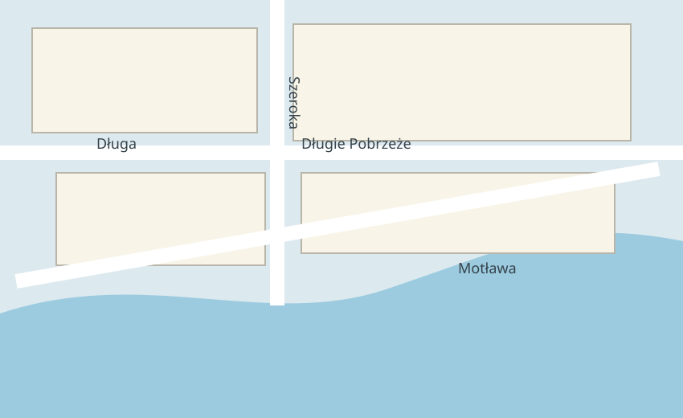

<!doctype html>
<html lang="en">
<meta charset="utf-8">
<meta name="viewport" content="width=device-width,initial-scale=1">
<title>KUDY offline map proof</title>
<link rel="stylesheet" href="app.css">
<main>
  <header><strong>KUDY · offline proof</strong><span id="status">checking local package…</span></header>
  <section id="viewport" aria-label="Offline map of a small Gdańsk sample">
    <div id="map"><div id="markers"></div></div>
    <nav><button id="minus" aria-label="Zoom out">−</button><output id="zoom">15</output><button id="plus" aria-label="Zoom in">+</button></nav>
    <p id="bounds" hidden>Outside downloaded region</p>
    <a id="attribution" href="https://www.openstreetmap.org/copyright">© OpenStreetMap contributors · ODbL</a>
  </section>
</main>
<script type="module" src="app.js"></script>
</html>
